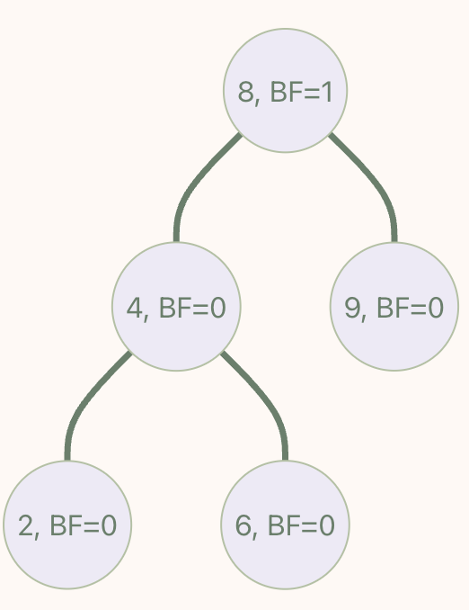
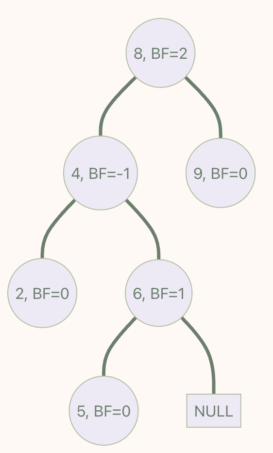
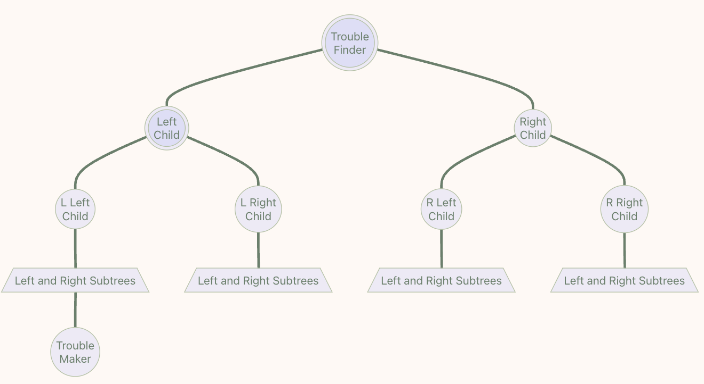
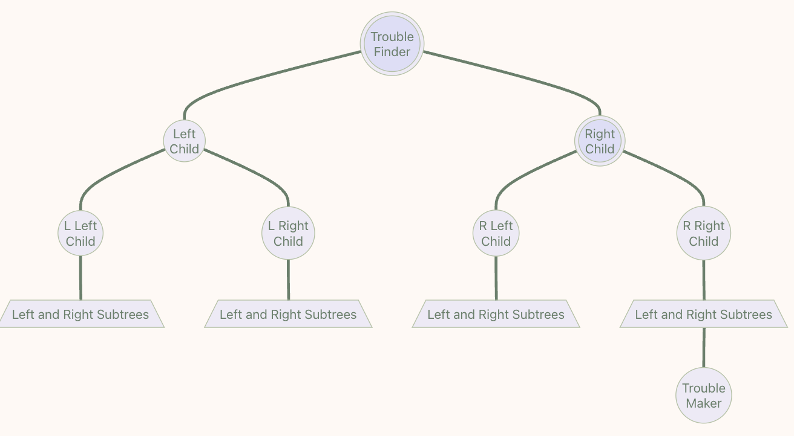
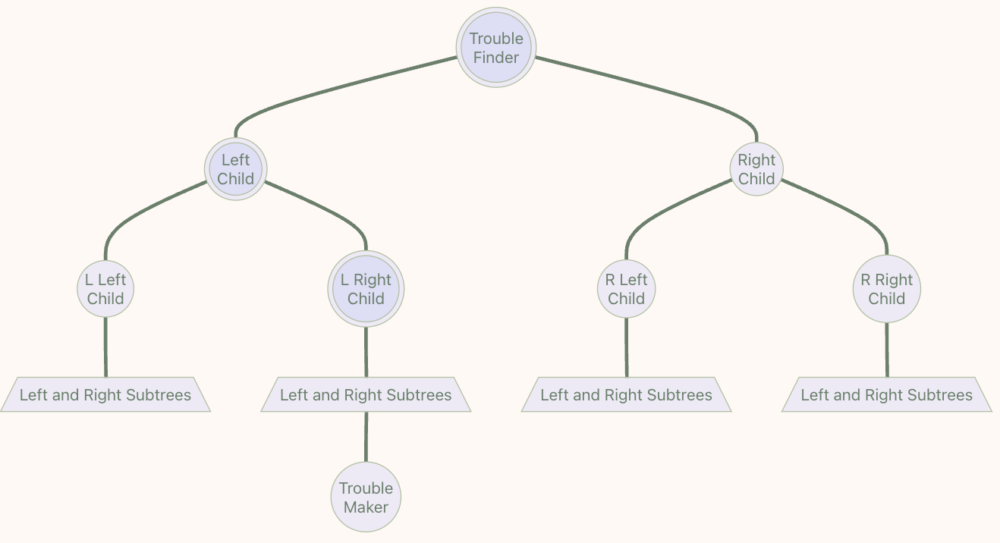

Chapter 01 : AVL trees, Splay Trees, and Amortized Analysis¶
约 5541 个字 26 张图片 预计阅读时间 28 分钟
AVL Trees¶
Why?¶
对于一棵二叉搜索树，其对点的操作代价为 \(O(\log\space n)\)。然而在最坏情况（退化成一条链）下，它会退化成 \(O(n)\)。
如果我们想让一棵二叉树好维护（即时间复杂度低），那么就希望它的高度尽可能低，而在点数固定的情况下，一种朴素的思想是让节点尽可能“均匀”地分布在树上。
Definition¶
AVL Trees
- 一个空二叉搜索树是平衡的
- 如果一个树 \(T\) 是一个非空二叉搜索树，其左子树为 \(T_L\) ，右子树为 \(T_R\) ，那么树 \(T\) 是平衡的当且仅当：
- \(T_L\) 和 \(T_R\) 是平衡的
- \(|h_L-h_R|\leq 1\) ，其中 \(h_L\) 为 \(T_L\) 的高度，\(h_R\) 为 \(T_R\) 的高度
Balance Factor
-
一个节点的平衡因子（Balance Factor）被用来描述一个节点的平衡状态，对于节点 \(T_P\)，它的左子树为 \(T_L\)，右子树为 \(T_R\)，则 \(BF(T_P)=h(T_L)-h(T_R)\)
-
在一个 AVL 树中，其每一个节点的平衡因子均为 -1 或 0 或 1
在如此定义之下，可以证明 AVL Trees 的高度为 \(O(\log\space N)\)：
Height of AVL Trees
我们记 \(n_h\) 是高度为 \(h\) 的 AVL 树所包含的最少节点数，则有如下递推关系：
可以发现 \(n_h\) 非常像 Fibonacci 的递推公式，因此我们用 Fibonacci 进行一个估计，对于 Fibonacci 数列：
由此我们可以得到 \(\log(F_n)\approx n\) ，而 \(n_h+1\approx F_{h+2}\)，所以 \(h\approx\log(n_h)\)，即 \(h\approx\log N\)
The Rotation Operations on BST¶
为了时刻能维护 AVL 树的平衡，我们需要引入“旋转”这一操作，首先我们需要定义两个概念：
Trouble Maker & Trouble Finder


在插入一个 5 之后，可以看到，这使得 8 的平衡因子变成了 2，不再符合 AVL 树的要求，这样因为某个点的插入导致平衡因子不再符合 AVL 树要求的点被称为 Trouble Finder（即这里的 8），而引起这个 “Trouble” 的点被称为 Trouble Maker（即这里的 5）。
Rotation Operations
值得注意的是，在实际情况中可能会出现多个 "Trouble Finder",但我们只关注"距离案发现场最近的 Trouble Finder"为根的子树。




稍作解释：例如 "LL"，指 "Trouble Maker" 位于 "Trouble Finder" 左孩子的左子树中的情况.
接下来我们从两个视角来理解 Rotate Operation：
从旋转视角来理解
以 LL Rotation 为例（RR Rotation 类似）

我们可以得到当下有如下性质：
- \(BF(\text{Trouble Finder})=h(\text{New Left Subtree})−h(\text{Right Subtree})=2\)
- \(h(\text{New L Left Subtree})−h(\text{L Right Subtree})=1\)
- 如果此差为 0，则不应当成为 Trouble Maker，若此差为 2，则 Left Child 应当为 Trouble Finder；
现在我们希望在保留二叉搜索树的性质下，要让 \(∣BF(\text{Trouble Finder})∣\) 变小，一个很自然的想法就是让 \(h(\text{New Left Subtree})\) 减 1，让 \(h(\text{Right Subtree})\) 加 1。那么我们可以有如下操作：


从换根视角来理解（推荐）
以 LL Rotation 为例：（RR Rotation 类似）


当插入 "Trouble Maker" 时，"Trouble Finder" 发现左子树太高了，因此我们不希望让左子树成为某个节点的子树，如 "Cut" 操作割裂其与 "Trouble Finder" 的关系。
我们仍然需要让这个森林重新变回一个树，所以就需要重新从里面找到根节点，显然，只能选择 Trouble Finder 旁边的 Left Child。但是为了继续维护二叉搜索树的性质，所以我们需要将 L Right Subtree 移植到 Trouble Finder 必定空缺（因为这里原先是 Left Child）的左指针上。
再以 LR Rotation 为例：(RL Rotation 类似)：


找到关键的三个点（Left Child, Trouble Finder, L Right Child），然后把最下面的顶到上面去，剩下两个作为左右子树，原先的那个点的左右子树则对应地，左子树接到左边空缺的右子树上，右子树接到右边空缺的左子树上。
如果出现多个 Trouble Finder 该怎么办？
之前我们提到过，我们关注的是"距离案发现场最近的 Trouble Finder"为根的子树，并以此作出 Rotation 操作，这也会导致其所有父节点的平衡因子都会相应发生变化。
Splay Tree¶
Definition¶
-
Splay 树，即伸展树，想要解决的问题和 AVL 树类似，只不过 Splay 树希望达到的目标是在摊还(Amortized) 复杂度 \(O(\logN)\) 的情况下完成大部分对点操作。
-
为使 AVL 保持平衡，我们需要维护从根节点到 Trouble Maker 这条路径上所有点的平衡因子。而 Splay 则不再维护这些信息，这意味着我们无法保证 Splay 树的状态都是平衡的，但是我们希望它尽可能平衡。具体来说就是对于 \(M\) 次任意操作，其时间复杂度都为 \(O(M\logN)\)，均摊下来这 \(M\) 个操作每一个都需要 \(O(\logN)\)。
-
Splay 的核心思想就是，每当我们访问一个节点（比如查询某个点、插入某个点，删除某个点）时，我们就通过一系列操作将目标点转移到根部，形象上理解就是不断旋转整个树的构造，直到把点转到根部。
Operations¶
对于某个节点 X，我们记其父节点为 P（Parent），其父节点的父节点为 G（Grandparent）。（请谨记，我们需要两层两层地来看，再判断当前子结构到底是下面的哪种情况，作出相应的操作，而并非是随意地自底向上/自上而下地旋转！）
- 当我们访问到 X 时：
- 如果 P 是根节点，则直接进行一次 Single Rotation（即类似 AVL Tree 中的 LL / RR Rotation）
- 如果 P 不是根节点：
- 当情况为 LR / RL 时，进行一次 LR Rotation 或 RL Rotation，称该操作为 Zig-Zag
- 当情况为 LL / RR 时，进行两次 Single Rotation，使得 X、P、G 的顺序逆转，像跷跷板一样，称该操作为 Zig-Zig
- 不断对 X 进行 Splay 操作，直到 X 成为根节点


接下来访问到 X 之后就可以进行相应的操作了，例如查找、删除等。
Find X
根据 BST 的性质，可以在 \(O(\logN)\) 的时间里找到 X，接下来通过旋转操作，将 X 不断旋转至根，最终直接取出 Root 即为结果。
Remove X
根据 BST 的性质，可以在 \(O(\logN)\) 的时间里找到 X，接下来通过旋转操作，将 X 不断旋转至根，接下来删除 Root 节点，并在维护 BST 性质的情况下递归地合并左右孩子树即可。
Find Max
根据 BST 的性质，可以在 \(O(\logN)\) 的时间里找到最大值，将它旋转到根部以后，可以发现它没有右孩子树，直接删掉就行。
Amortized Analysis¶
Application
- 一般情况下我们分析时间复杂度时，针对的往往是某个具体的操作。而均摊分析的对象则是一个数据结构的一系列操作，而这一系列操作中有成本较低的，也有成本较高的，而且操作之间也可能有互相影响。
- 均摊分析是以一个更全局的角度来计算“平均”的操作代价，它计算的是从初始状态开始，连续的 M 次任意操作的平均成本。需要注意的是，它不同于平均时间分析（所有可能的操作出现概率平均，也就是直接求平均）和概率算法的概率分析（所有可能的操作出现概率不同，也就是加权求平均）不同，摊还分析和概率完全无关。
可以得到如下不等式：
具体解释如下：
Explanation
由于 amortized bound 限制了所有的 M 次操作，所以其上界就等于最差的情况发生 M 次（当然，很多情况下不一定能取到全都是最差情况）；同样的，由于需要对任意组合都成立，所以一定不会小于统计学意义上的平均情况。
均摊分析一共有三种方法：聚合分析（Aggregate Analysis）、记账分析（Accounting Method）和势能分析（Potential Method）
Aggregate Analysis¶
聚合法相对简单，即求 N 次操作的平均代价：
其中 \(c_i\) 表示一次操作的实际成本
Example
通常，栈能够进行 push(S, x) 与 pop(S) 操作，其时间复杂度均为 \(O(1)\)。现在定义一个新的操作 multipop(S, k)，它删除栈S栈顶的k个元素（若不足k个，则全部弹出为止）。
一个 multipop 操作的最坏时间复杂度是 \(O(n)\)，因此 \(n\) 个操作的序列的最坏时间代价是 \(O(n^2)\)，这个结论虽然正确，但不是一个确界。
从另一个角度看，对于一个栈来说，出栈的次数一定小于等于入栈的次数，因此我们有：
Accounting Method¶
记账算法进行均摊分析时，我们对不同操作赋予不同费用，称为均摊代价。均摊代价可能多于或少于其实际代价。当一个操作的均摊代价超出其实际代价时，我们将差额存入数据结构中的特定对象，存入的差额称为信用（Credit）。对于后续操作中均摊代价小于实际代价的情况，信用可以用来支付差额。
值得注意的是，信用必须保持非负，因为均摊代价须为实际代价的上界。
即定义 \(\hat{c_i}\) 表示一次操作的均摊成本，可人为自行定义，但需要满足条件：
Example
我们依然看上面栈的例子，对于一个有 multipop 操作的栈 S，其实际消耗成本为：
- Push：1
- Pop：1
- Multipop：min(sizeof(S),k)
我们定义这三个操作的均摊成本如下（为什么如此定义在后面势能算法有所体现）：
- Push：2
- Pop：0
- Multipop：0
在每次进行 push 操作时，我们花费 2 个单位的代价，1 个单位用来支付其本身的实际代价，另 1 个单位可作为信用保存；当对栈中的任何一个元素进行 pop（ multipop 也属于 pop ）操作时，可用该元素在 push 时储存的信用来支付差额。这样就保证了在任何时刻的信用值是非负的。
最坏的情况就是所有的 n 步操作都是 push，这样总代价就是 2n，时间复杂度为 \(O(n)\)，均摊时间复杂度为 \(O(1)\)
Potential Method¶
势能法和记账算法相似。每次操作后得到的数据结构都对应一个势能 \(\Phi(i)\)，每次的信用 \(\hat c_i - c_i = \text{Credit}_i = \Phi(D_i) - \Phi(D_{i-1})\)
于是累加所有式子，得到 \(n\) 个操作的总均摊代价为：
因此，只要我们能定义一个势能函数 \(\Phi\)，使得 \(\Phi(D_n)\geq\Phi(D_0)\)，就能满足总均摊代价作为总实际代价的一个上界。
Example 01-Stack
还是上面带有 Multipop 操作的栈 S，我们定义函数 \(\Phi\) 为当前栈中元素的个数，显然满足任意时期 \(\Phi(D_n)\geq 0 = \Phi(D_0)\) ，我们可以以此计算三个操作的均摊代价（这能解释之前 Accounting Method 的设定）：
- Push:
- \(\Phi(D_i) - \Phi(D_{i-1}) = (s+1) - s = 1\)
- \(\hat{c_i} = c_i + \Phi(D_i) - \Phi(D_{i-1}) = 1 + 1 = 2\)
- Pop:
- \(\Phi(D_i) - \Phi(D_{i-1}) = (s-1) - s = -1\)
- \(\hat{c_i} = c_i + \Phi(D_i) - \Phi(D_{i-1}) = 1 + (-1) = 0\)
- Multipop:
- \(\Phi(D_i) - \Phi(D_{i-1}) = (s-k) - s = -k\)
- \(\hat{c_i} = c_i + \Phi(D_i) - \Phi(D_{i-1}) = k + (-k) = 0\)
后面就跟 Accounting Method 相同了
Example 02-Splay Tree
对于 Splay Tree 我们需要选取合适的函数 \(\Phi\)：
我们已知对于 Splay Tree，其操作的复杂度均为 \(O(\log n)\)，那我们也需要找到合理的势能函数，使得 \(\Phi(D_i)-\Phi(D_{i-1})\) 也为 \(O(\log n)\)，否则会影响估算的精确度。
其次，势能函数中，要包含相应的部分，以抵消操作中的常数。比如 Zig-Zag 操作包含了两个旋转，实际成本为 2，worst-case 的 Zig-Zag 操作数目是 \(O(N)\)，如果势能函数的构造不能使 Zig-Zag 中的实际成本 2 被抵消掉，\(\Phi(D_i)-\Phi(D_{i-1})\) 就会产生 \(O(N)\) 的代价，影响精确估算。
我们注意到 Splay 操作中，会将所访问的节点翻转到根节点；同时，翻转代价高的操作往往更大程度上的降低了树高（比如前面例子中，将节点 1 从叶节点位置翻转到根节点，大致将树高缩减为原来的一半）。所以我们考虑一个跟节点高度相关的（或类似的）势能函数。
注意到在 Splay 操作中，几乎每个节点的高度都会改变，哪怕该节点为根节点的子树没有任何变化。如果我们直接使用节点高度作为势能函数，后续的数学计算与推导会变得非常复杂。我们希望有一个可以简化后续数学推导的势能函数。
一个可用的势能函数是树中所有节点的 rank 之和：
其中 S(i) 指的是子树 i 中的节点数（包括节点 i)。我们用 R(i) 表示节点 i 的 rank，\(R(i) = \log_2 S(i)\)。选取 rank 之和作为势能函数的好处是除了 X, P, G 三个节点外，其他节点在 splay 操作中 rank 保持不变，因而可以简化计算。
我们使用 \(R_2\) 表示操作后的势能，\(R_1\) 表示操作前的势能。
Derivation

Zig 操作做了个单旋，实际成本为 1
从 Zig 操作示意图中可以看出，在整个操作中只有 X 和 P 的 rank 值有变化。所以我们有：
由于节点 P 由根节点变为非根节点，我们有 \(R_2(P)-R_1(P)\leq 0\) ，因此 \(\hat{c_i}\leq 1 + R_2(X) - R_1(X)\)。

Zig-Zag 操作做了两次旋转，实际成本为 2
我们有：
由 Zig-Zag 操作示意图可以看出，操作前 G 是根节点，操作后 X 是根节点，他们的 rank 相同，即 \(R_2(X) = R_1(G)\)。因此我们有 \(\hat{c_i} = 2 - R_1(X) + R_2(P) - R_1(P) + R_2(G)\)。
我们首先引入一个引理：
Lemma
由 \(y = \log_2 x\) 是一个凸函数，我们有 \(\frac{\log_2 a+\log_2 b}{2}\leq\log_2 \frac{a + b}{2}\)
因此我们有：
由引理我们就可以得到：
再加上初始 P 为 X 的父亲，那么我们有 \(R_1(P)\geq R_1(X)\)，代入两式我们可以得到：

Zig-Zag 操作做了两次旋转，实际成本为 2
我们有：
我们继续用 Lemma(这一次比较难想，但很重要)：
再加上初始 P 为 X 的父亲，那么我们有 \(R_1(P)\geq R_1(X)\)，旋转后 X 为 P 的父亲，那么我们有 \(R_2(P)\leq R_2(X)\)，代入我们可以得到：
至此，我们已经获得了三个操作的所有上界：
根据 Splay 操作的特性，单次 Zig 操作最多只有一次（总次数要么是偶数要么是奇数，偶数可通过连续 Zig-Zig 操作进行，奇数即补上一次单次 Zig 操作）
最终整合在一起我们可以得到均摊上界：
Homework¶
Question 01
For the result of accessing the keys 3, 9, 1, 5 in order in the splay tree in the following figure, which one of the following statements is FALSE?

- A. 5 is the root
- B. 1 and 9 are siblings
- C. 6 and 10 are siblings
- D. 3 is the parent of 4
Answer
D. 3 is the parent of 4
本身不难，谨记的是两层两层地进行旋转，尤其会出错的是在 zig-zig 情况，这时候应该自顶向下旋转而非自底向上，大致过程如下（原谅我图画的有点丑）：

Question 02
When doing amortized analysis, which one of the following statements is FALSE?
- A. Aggregate analysis shows that for all n, a sequence of n operations takes worst-case time T(n) in total. Then the amortized cost per operation is therefore T(n)/n
- B. For potential method, a good potential function should always assume its maximum at the start of the sequence
- C. For accounting method, when an operation's amortized cost exceeds its actual cost, we save the difference as credit to pay for later operations whose amortized cost is less than their actual cost
- D. The difference between aggregate analysis and accounting method is that the later one assumes that the amortized costs of the operations may differ from each other
Answer
B. For potential method, a good potential function should always assume its maximum at the start of the sequence
这里根据定义，我们需要定义的是下限（Minimum）而非上限，因为我们要保证 \(\Phi(D_n)\geq\Phi(D_0)\) 即定义了势能函数就定义了下限
Question 03
Consider the following buffer management problem. Initially the buffer size (the number of blocks) is one. Each block can accommodate exactly one item. As soon as a new item arrives, check if there is an available block. If yes, put the item into the block, induced a cost of one. Otherwise, the buffer size is doubled, and then the item is able to put into. Moreover, the old items have to be moved into the new buffer so it costs \(k+1\) to make this insertion, where \(k\) is the number of old items. Clearly, if there are \(N\) items, the worst-case cost for one insertion can be \(\Omega(N)\). To show that the average cost is \(O(1)\), let us turn to the amortized analysis. To simplify the problem, assume that the buffer is full after all the \(N\) items are placed. Which of the following potential functions works?
- A. The number of items currently in the buffer
- B. The opposite number of items currently in the buffer
- C. The number of available blocks currently in the buffer
- D. The opposite number of available blocks in the buffer
Answer
D. The opposite number of available blocks in the buffer
题目说平均花费为 \(O(1)\)，所以我们希望均摊分析下来也是一个 \(O(1)\) 的情况，那么就需要每次操作都为常数集，设 \(\text{size}_i\) 为第 \(i\) 次插入前 buffer 的大小，有 \(\hat{c_i}=c_i+\phi_i-\phi_{i-1}\)，如果插入前 buffer 没满，那么 \(c_i=1\)，否则 \(c_i=\text{size}_i+1\)，一个一个来分析：
- A：如果插入前 buffer 没满，\(\hat{c_i}=c_i+\phi_i-\phi_{i-1}=1+(\text{size}_i+1)-\text{size}_i=2\)；如果插入前 buffer 满了，\(\hat{c_i}=(\text{size}_i+1)+(\text{size}_i+1)-\text{size}_i=\text{size}_i+2\)
- B：如果插入前 buffer 没满，\(\hat{c_i}=c_i+\phi_i-\phi_{i-1}=1+(-\text{size}_i-1)-(-\text{size}_i)=0\)；如果插入前 buffer 满了，\(\hat{c_i}=(\text{size}_i+1)+(-\text{size}_i-1)-(-\text{size}_i)=\text{size}_i\)
- C：如果插入前 buffer 没满，\(\hat{c_i}=c_i+\phi_i-\phi_{i-1}=1+(-1)=0\)；如果插入前 buffer 满了，\(\hat{c_i}=(\text{size}_i+1)+(\text{size}_i-1)-0=2\text{size}_i\)
- D：如果插入前 buffer 没满，\(\hat{c_i}=c_i+\phi_i-\phi_{i-1}=1+1=2\)；如果插入前 buffer 满了，\(\hat{c_i}=(\text{size}_i+1)+(-\text{size}_i+1)-0=2\)
所以看到 D 两种情况都是常数项级别
Question 04-Midterm
Recall that the worst-case time complexities of insertions and deletions in a heap of size \(N\) are both \(O(\log N)\). Then, without changing the data structure, the amortized time complexity of insertions in a heap is also \(O(\log N)\), and that of deletions is \(O(1)\).
Answer
True. 均摊分析下，我们需要保证的是任何一个操作序列乘以均摊复杂度并加和之后。其总复杂度要高于真实的操作复杂度（\(O(\log N)\)）。只要满足这个性质，就是一个合理的均摊复杂度分析。不需要管这到底是什么奇怪的堆（离谱至极哦是 yds 出的那没事了）
具体来说，其实和上面栈的 push pop 相似的，只要 insert 的均摊复杂度为 \(O(\log N)\) 就满足总复杂度高于真实复杂度（因为最特殊的情况就是全插入，此时实际复杂度为 \(O(N\log N)\)）